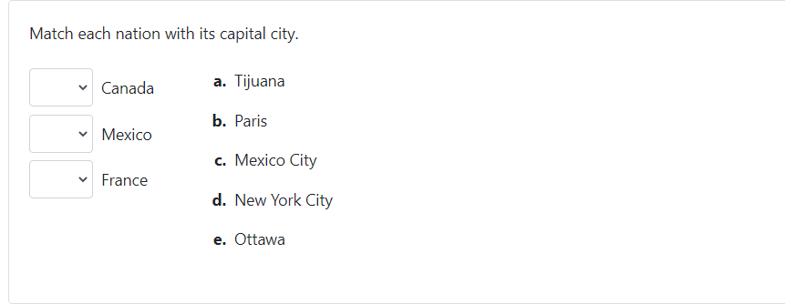

PrairieLearn now has a new pl-matching element, thanks to the efforts of
Neal Terrell (California State University, Long Beach).
This element can be used to create two-column "matching" problems, where students must select an option that best matches each entry in a list of statements.
The statements in the left column are specified in the element code, and indicate their correct matching option. Additional "distractor" options can be added. The code that generates the above question is:
<pl-matching answers-name="capitals">
<pl-statement match="Mexico City">Mexico</pl-statement>
<pl-statement match="Ottawa">Canada</pl-statement>
<pl-statement match="Paris">France</pl-statement>
<pl-option>Tijuana</pl-option>
<pl-option>New York City</pl-option>
</pl-matching>
For more information, see the pl-matching documentation.